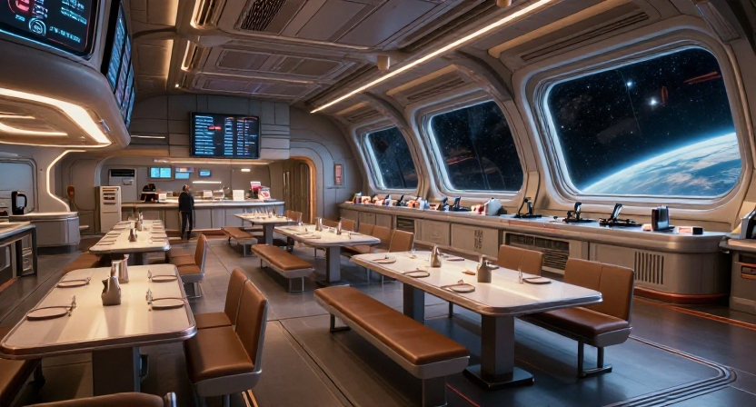

LES 30 SECTEURS
⚠ Spoiler ! Ce sommaire donne accès à toutes les pages, y compris la fin. Il est pratique pour corriger ou pour reprendre après une mort, mais il casse le suspense. Joueurs : regardez plutôt la carte de la route dans le journal.
CE QU'IL FAUT TROUVER
Page de référence. Note sur une feuille ce que tu as déjà récupéré — cette liste ne se coche pas toute seule (impossible sans JavaScript).
- Le respirateur Secteur médical (03) — +20 % d'O2. Ne bois pas la fiole sans étiquette.
- Le fusible de secours Infirmerie (04) — sert à redémarrer le noyau d'énergie (21).
- Le code 7-7-9 Centre de données (12) — ouvre l'armurerie (13). Ne branche pas la clé USB.
- Le coupeur de plasma Armurerie (13) — pour couper les jambes du robot garde.
- La combinaison d'évacuation Atelier (20) — il manque un joint, répare-le avant le sas (26).
- Le carburant Soute (25) — charge-le avant d'aller au sas d'embarquement.
Rappel : S.O.L.I. ment. Quand elle insiste pour que tu prennes un risque, c'est presque toujours le piège.
?LA ROUTE DE LA SURVIE
Voici le chemin sûr, du cryo au décollage. 22 étapes, aucune mort. Spoiler : les autres chemins existent, mais ils coûtent cher.
- 01 Cryo
- 02 Couloir A
- 03 Médical
- 04 Infirmerie
- 05 Machines
- 06 Réacteur
- 07
et 11 - 08 Serre
- 09 Conduits
- 10 Labo IA
- 11
et 14 - 12 Données
- 13 Armurerie
- 14
et 19 - 15 Dock
- 16 Sas
- 17 Observatoire
- 18 Cantine
- 19
et 23 - 20 Atelier
- 21 Noyau
- 22 Passerelle
- 23
- 24 Hangar
- 25 Soute
- 26 Sas embarq.
- 27
- 28 Cockpit
- 29
- 30 ? Victoire
CANTINE • RÉSERVES O2

Le pont de maintenance au-dessus des réserves d'oxygène commence à se rompre. Un garde se retourne, le mécanisme de verrouillage s'enclenche et la structure va lâcher. S.O.L.I. te presse de bouger, mais il faut agir au bon moment pour sauver les capsules.
Les réserves sont encore debout. Il reste un seul instant pour verrouiller le mécanisme.
Le bon moment est celui où le curseur rouge traverse la zone verte.
Le pont de maintenance s'effondre. Un garde se retourne brusquement et le mécanisme de verrouillage s'enclenche. Tu dois agir au bon moment pour bloquer la chute avant que le signal rouge ne passe.